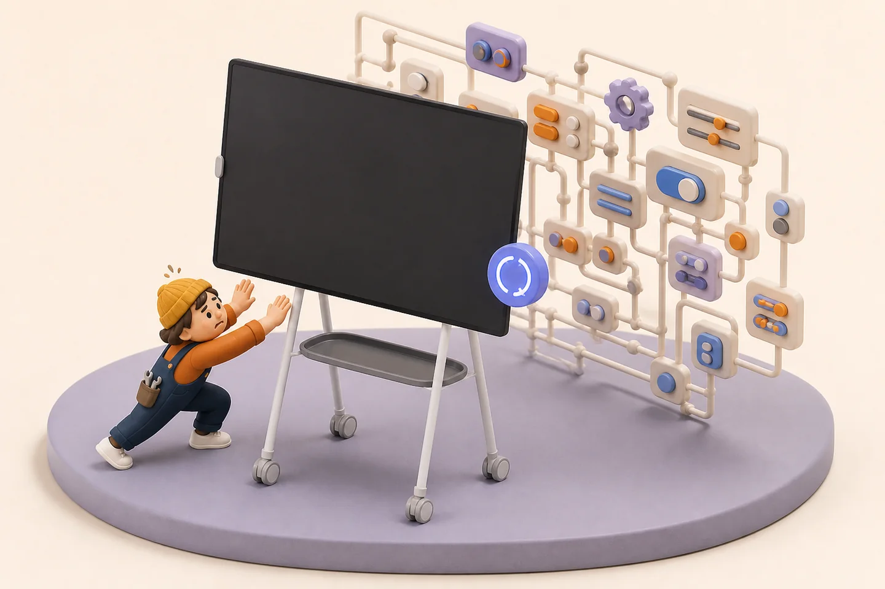
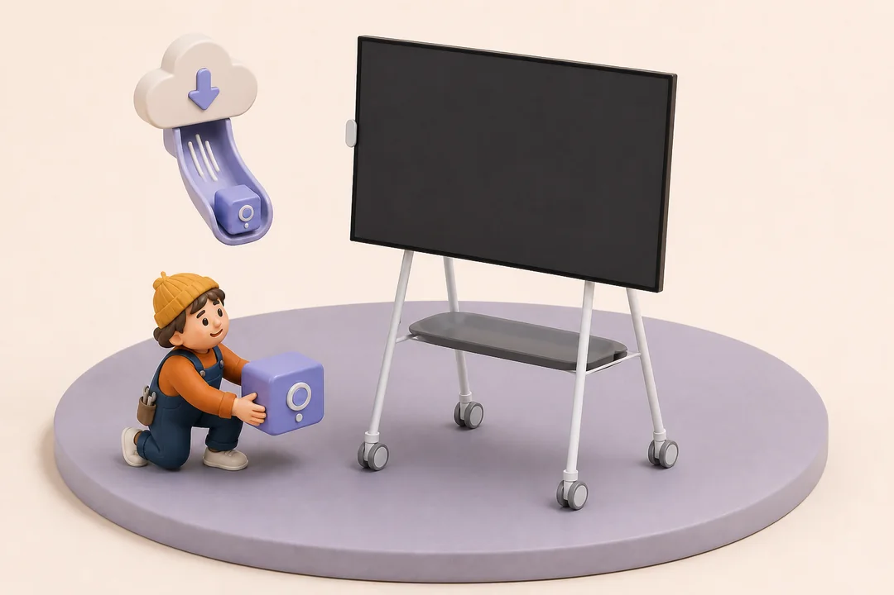
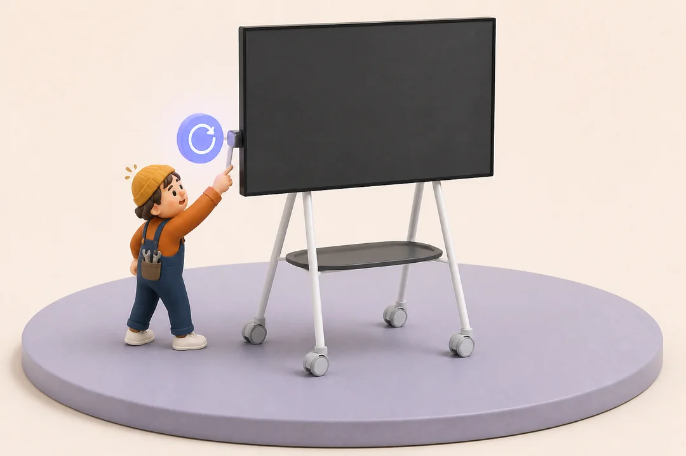
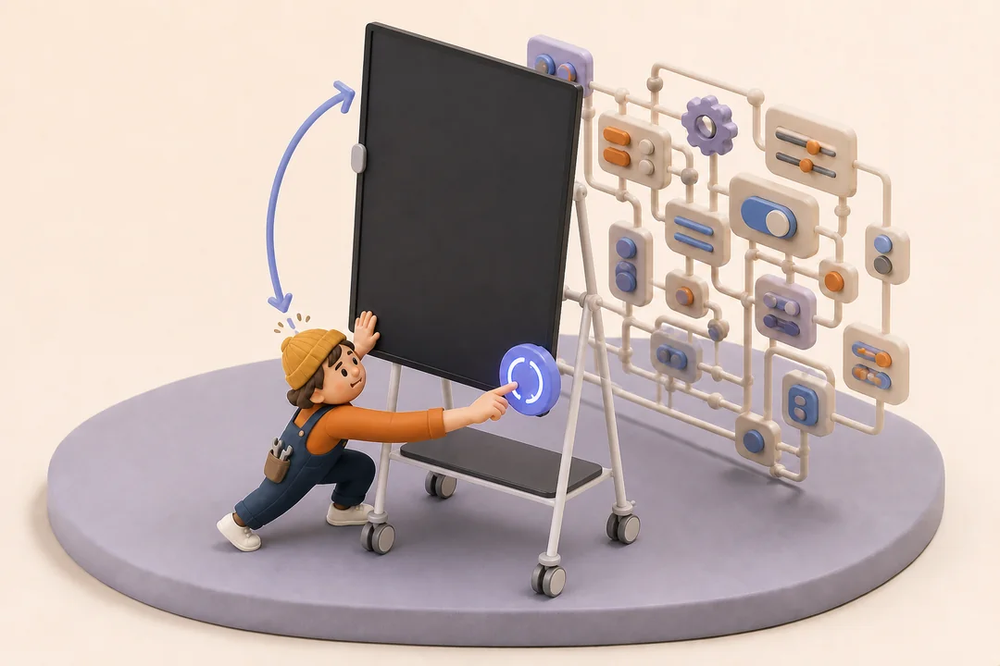
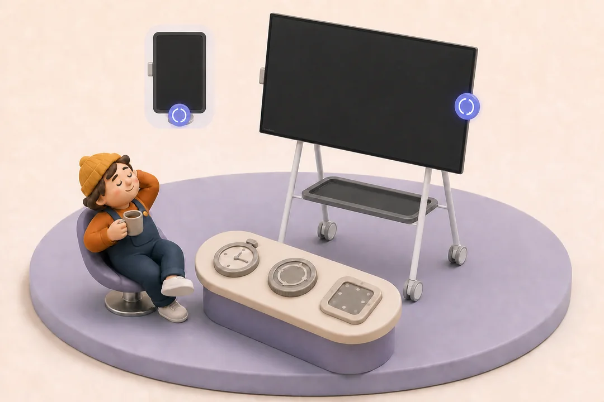

The reader is already there
Your hand naturally lands beside it. Swivel uses an available, unclaimed reader event as a simple trigger—never as identity.
A tiny helper for one very large screen
Swivel gives a Surface Hub 2S on a rotating stand one obvious orientation control. Touch the reader, tap the bubble, and turn Windows 90° without taking a guided tour of Settings.
Requires Windows 10/11 Pro or Enterprise. The original Windows 10 Team edition is not supported.

Why it exists
The stand rotates. The Windows desktop does not get the memo. The usual route involves Display Settings, a dropdown, a confirmation dialog, and enough ceremony to suggest the screen is applying for a passport.
Your hand naturally lands beside it. Swivel uses an available, unclaimed reader event as a simple trigger—never as identity.
One large bubble. One rotate button. Ignore it and it disappears after two seconds, offended but professional.
Swivel rotates the pixels. You rotate the furniture. The steel stand remains gloriously non-motorized.
The not-quite-GIF
A tiny web animation weighs less, stays crisp, and politely stops moving when your device asks for reduced motion. GIFs walked so this rectangle could rotate.
How it works
Start with the simulated control. Save the giant-screen gymnastics for when you are ready.

Open this page on the Hub, download Swivel.exe, place it in a permanent local folder, and launch it. There is no installer and no separate .NET setup.
A 68 MB “tiny utility.” Self-contained software has an appetite.

Confirm the control panel says the fingerprint listener is ready. Touch the reader once and the bubble appears. If the hardware is not ready, choose Simulate fingerprint touch.
No fingerprint image. No identity. Just a very fancy button signal.

Tap Rotate display. Swivel asks Windows to turn the desktop 90°. You then rotate the physical Hub on its stand like the capable human motor you are.
If it turns the wrong way, no panic—change the portrait direction in Settings.

Choose the bubble position for landscape and portrait, adjust its timeout and turn direction, and enable launch at sign-in only after the Hub tests pass.
The highest compliment for a utility is forgetting it is running.
Current release
Download directly on the Surface Hub, place the file somewhere permanent, and try the simulated control before touching the real display orientation.
4449DC99CB2DC0803E342A3C3708417099DFE8EB8D2BA3293FADEEBDA026131APrivacy
Swivel does not receive or store a fingerprint image, biometric identity, or biometric template. There is no account, cloud service, analytics, or telemetry.
Settings and diagnostics stay on the device under your local Swivel app-data folder.
It listens for an unused reader event. It does not ask Windows to identify the person touching it.
The code is visible on GitHub. No open-source license has been selected yet.